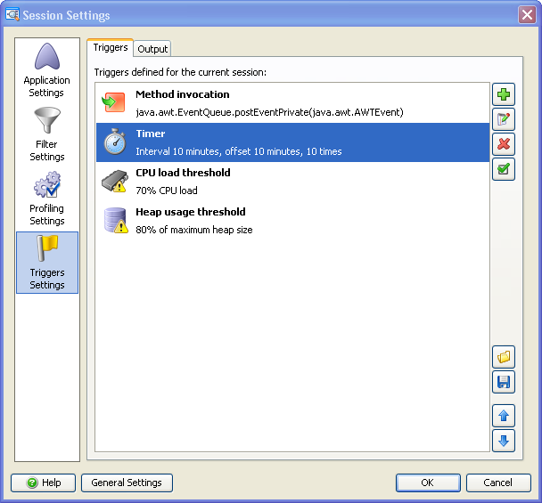

Offline Profiling and Triggers |
However, offline profiling still requires some actions to be performed. At least one snapshot has to be saved, otherwise no profiling data will be available for analysis later on. Also, to see CPU or allocation data, you have to start recording at some point. Similarly, if you wish to be able to use the heap walker in the saved snapshot, you have to trigger a heap dump at some point.
The first solutions to this problem is the offline profiling API. With the offline profiling API, you can programmatically invoke all profiling actions in your code.
The drawback of this approach is that you have to add the JProfiler agent library to the class path of your application during development, add temporary profiling code to your source code and recompile your code each time you make a change to the programmatic profiling actions.
With triggers, you can specify all profiling actions in the JProfiler GUI without modifying your source code. Triggers are saved in the JProfiler config file. The config file and the session id are passed to the profiling agent on the command line when you start with offline profiling enabled, so the profiling agent can read those trigger definitions.

In contrast to the profiling API use case where you add calls to your source code, triggers are activated when a certain event occurs in the JVM. For example, if you would have added a call to a certain profiling action at the beginning or at the end of a method when using the profiling API, you can use a method invocation trigger instead. Instead of creating your own timer thread to periodically save a snapshot, you can use a timer trigger.
Each trigger has a list of actions that are performed when the associated event occurs. Some of these actions correspond to profiling actions in the offline profiling API. In addition there are other actions that go beyond the controller functions such as the actions to print method calls with parameters and return values or the action to invoke an interceptor for a method.